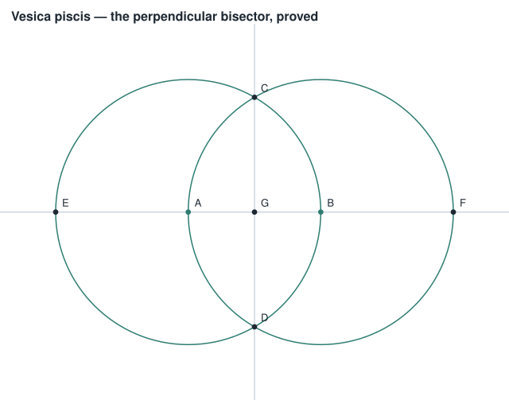

Blog
Written down, then run
Short technical posts about mechanisms that are usually drawn and rarely executed. Each one simulates the thing first, asserts the claim it is about to make, and animates the simulation — so a post whose claim stops being true fails to render rather than going out wrong.
Graph theory, computed
Every state on screen came from running the algorithm on the graph you passed in
-

The picture cannot show a state the algorithm did not reach
Eleven graph algorithms — Dijkstra to max flow, Kruskal to König — computed once and drawn twice, as Manim video and as SVG storyboard. A graph that makes the claim false is refused with the witness: the cycle, the negative cycle, the odd-degree vertices.
-
Matching and cover: why König's theorem is a certificate
A maximum matching and a minimum vertex cover of the same size prove each other optimal. Computed from the matching, checked edge by edge, and drawn only then.
Dataflow, executed
How data moves through an accelerator and across a cluster
-

The pipeline bubble 1F1B doesn't fix
GPipe and 1F1B finish on the same cycle and idle for the same number of stage-slots. What 1F1B buys is activation memory — 23 sets against 6 — which is the number that decides whether a model fits.
-

Why the systolic array feeds itself diagonally
The skew is not a convention. Entries entering on cycle t are exactly the anti-diagonal, because that is the only arrival time at which a multiply meets the running sum it belongs to — and each weight is then read from SRAM once instead of once per output.
-

Ring all-reduce: the bytes per rank don't grow
Reduce-scatter then all-gather, executed chunk by chunk. Each rank sends under 2D regardless of ring size; what grows with the ring is the number of serial hops, which is a latency story rather than a bandwidth one.
-
Interleaved pipelines: the bubble that does move
Splitting each device's layers into several non-contiguous chunks genuinely shrinks the bubble, and pays for it in cross-device traffic. Same treatment: simulated, measured, animated.
Linear algebra, four ways
The operations underneath the dataflow above
-

Matrix multiplication, four ways
ABis taught as a rule for filling in entries. Three other readings of the same product explain what it is for — and two of them are what a systolic array and tensor parallelism already execute. -
Low rank, and what it throws away
If
ABis a sum of rank-1 terms, keeping only the largest few is an approximation with a measurable error. Same treatment: computed, bounded, animated from the computation.
Constructive geometry
Compass, straightedge, and figures that prove what they assert
-

The picture is not the proof
1.618 is not the golden ratio, and every tool that answers by measuring its own drawing says it is. Ruler and compass reach exactly the tower of quadratic extensions of
Q— computing in that field turns a claim about a figure into a decision rather than an estimate. -
Why the cube cannot be doubled
Every constructible number has degree a power of two, and a cube root does not. The impossibility proof falls out of the same arithmetic the constructions are drawn with.